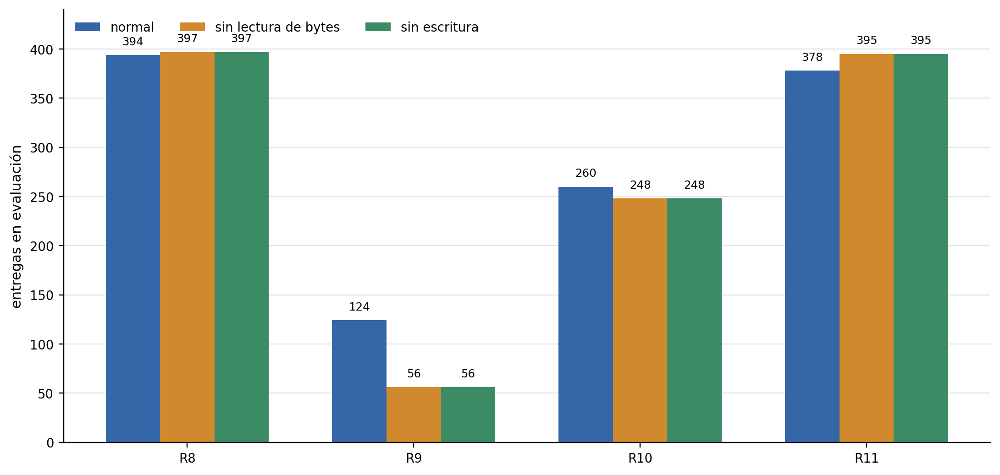

Qué investigamos
Cool Antz estudia cómo aparece el forrajeo cooperativo en una colonia de políticas locales. Cada hormiga ve solo una pequeña ventana de la grilla, decide cómo moverse y puede escribir un valor discreto en la celda que visita. El objetivo no es tocar comida una vez: la comida se debe encontrar, levantar, llevar al hormiguero y agotar mediante viajes repetidos.
La pregunta central fue práctica y causal: qué cambios hacen que la entrega sea confiable, cuáles solo producen actividad aparente, y en qué punto la grilla de bytes empieza a parecer memoria externa útil para la colonia.
En despliegue cada hormiga actúa con observaciones locales: comida cercana, otras hormigas, bytes, borde, hormiguero, estado de carga, orientación e identidad.
MAPPO entrena con información centralizada. Por eso la arquitectura del crítico no es un detalle: cambia el problema de asignación de crédito.
Como las hormigas no mueren, usamos supervivencia como tasa de éxito o completitud de la tarea, no como supervivencia biológica.
Cómo está ordenada la historia
El desarrollo no fue una subida lineal de mapas chicos a mapas grandes. Fue una serie de separaciones: primero definimos qué significa resolver el entorno, después aislamos el cuello de botella de cobertura, luego probamos qué cambió el comportamiento, registramos las ramas que no funcionaron, auditamos ramas y cambios locales, y recién al final miramos escalado con cuidado.
La política de 60 hormigas es el resultado entrenado más fuerte:
éxito 0.90625 y escritura no nula 0.998.
Las continuaciones seleccionadas escalan muy bien, aunque siguen dependiendo del punto guardado y la temperatura de despliegue.
El entrenamiento directo fue lento, inestable y falló parcialmente, pero reset-boundary recuperó entregas reales: 654 finales y 1003 en el mejor tramo.
El árbol se reconstruyó desde todos los refs visibles, 25 configs, 17 notebooks, 145 directorios de corrida, 230 runs W&B locales y 7771 archivos indexados fuera de entornos locales.
Los videos grandes son despliegues de políticas ya entrenadas, no prueba de entrenamiento de punta a punta en 1000x1000.
Árbol de experimentos
Cada nodo se puede seleccionar y lleva a la sección correspondiente. El árbol se genera desde una estructura de linaje: los conectores salen de relaciones padre-hijo, no de posiciones dibujadas a mano. Las imágenes son fotogramas reales de rollouts cuando hay checkpoint o video preservado; cuando una rama quedó como infraestructura o diagnóstico, usamos una visualización generada desde la configuración o las métricas locales y lo decimos explícitamente. Los nodos morados son ledger o documentación: no son mejores políticas, sino piezas que hacen trazable el árbol completo.
Evidencia visual y métricas registradas
La historia no se entiende con un solo video final. Primero hubo movimiento aleatorio; después apareció un avance parcial con una sola hormiga en 25x25; luego el currículo de cantidad de hormigas mostró por qué la cobertura multi-agente importaba; recién después llegaron los resultados fuertes en 50x50 y los despliegues grandes.
23/23 muestreado.

Objetivo / hipótesis
Evitar que el informe cuente solo el mejor retorno o el video más vistoso. El comportamiento se juzga por eventos de tarea, cobertura, estabilidad de optimización y evidencia visual.
Cambio respecto de la línea base
No es un experimento nuevo: es una corrección de lectura. Usamos los logs ya guardados para mostrar más de la señal que realmente se registró durante el proyecto.
Qué medimos
Entregas, recogidas, comida media en evaluación, entregas por 1000 pasos-hormiga, hormigas cargando, fracción de celdas visitadas, tasa de escritura no-cero, entropía, KL, norma de gradiente y pérdida del crítico.
Video / evidencia visual
La tira de videos muestra la progresión temprana 0, 2, 4 y 8
hormigas. El primer avance de una sola hormiga no tiene MP4
preservado en el checkout; lo mostramos en la sección 25x25 con
la evaluación DISTANCE_SHAPE.
Lectura de resultados
En 25x25, el retorno de entrenamiento sube de
7.7875 con 2 hormigas a 12.545 con 4
y 18.2294 con 8. En 50x50, los logs largos muestran
que cobertura, escritura y optimización se movían de forma
distinta; por eso no alcanza con una sola métrica final.
Cómo leemos una corrida
La evidencia no sale de un único video ni de un único número. Las corridas importantes dejan configuración, métricas por actualización, resumen final, checkpoint final, checkpoint seleccionado y, cuando estaba activado, videos subidos o archivados por etapa.
Artefactos
El contrato de tarea vive en experiments/*.json o en
el notebook. La traza numérica vive en metrics.jsonl
y summary.json. Los videos son evidencia cualitativa
sincronizada con updates o checkpoints, no decoración.
Selección
“Mejor checkpoint” no significa “último checkpoint”. Puede estar seleccionado por entrenamiento o evaluación held-out, por entregas, fracción entregada o eficiencia por pasos-hormiga.
Métricas
Además de retorno: delivery_events,
pickup_events, mean_carrying_ants,
final_mean_visited_cell_fraction,
write_action_nonzero_rate, entropía, KL, gradientes y
pérdida del crítico.
Despliegue
El sandbox exporta solo el actor 50x50 a JavaScript. No ejecuta JAX, no usa el crítico y no entrena: sirve para inspeccionar la política local real bajo layouts editables.
Auditoría completa del árbol
Antes de cerrar esta versión se reconstruyó el árbol desde todos los commits alcanzables, refs visibles, cambios locales, configuraciones, notebooks, directorios de corrida, runs W&B locales, logs y archivos experimentales del checkout. El resultado no es una historia pulida: es un ledger para que ninguna línea de investigación desaparezca.
Todos los commits alcanzables por refs locales/remotos visibles se
clasificaron por familia. La base limpia auditada fue
21d3cdf; el ledger quedó documentado después.
Los contratos de entrenamiento se leyeron desde
experiments/*.json y notebooks, no solo desde nombres
de carpetas o videos.
Se indexaron carpetas con summaries, evals, métricas, planes o
configs, además de runs W&B locales. El API cloud de W&B quedó
bloqueado por relogin required.
El índice excluye .git, entornos locales y la propia
salida de auditoría, pero incluye artefactos generados relevantes.
El índice completo vive en
docs/planning/experiment-tree-audit/README.md.
Esta página usa esa taxonomía para separar resultados principales,
diagnósticos, ramas solo visibles por branch, infraestructura y assets
de presentación.
| Familia auditada | Commits | Archivos | Configs / notebooks | Runs / W&B local | Ubicación en el árbol |
|---|---|---|---|---|---|
foundation-task-contract |
8 | 11 | 0 / 0 | 0 / 0 | Semántica del mundo, entrega, fuentes agotables y rollout aleatorio. |
jax-mappo-training-core |
21 | 155 | 1 / 0 | 0 / 13 | Entrenador JAX, MAPPO, evaluación, checkpoints, recursos y ramas multi-device. |
autocurriculum-exploration-baselines |
29 | 20 | 4 / 4 | 0 / 0 | Baselines de exploración, autocurrículos y superficies tempranas de lanzamiento. |
communication-memory-bytes |
94 | 327 | 1 / 1 | 10 / 27 | Bits, memoria externa, write-head, write-cost, no-write y R8-R12. |
ant-count-25x25-autoresearch |
75 | 256 | 0 / 1 | 52 / 0 | Desbloqueo 25x25: moldeado, cantidad de hormigas, CAP y visión. |
source-layout-50x50 |
4 | 444 | 4 / 4 | 2 / 3 | Geometría de fuentes 50x50: padded, proximity, smooth, rare y vectores. |
critic-full-layout-50x50 |
29 | 127 | 6 / 4 | 3 / 0 | Full-layout 50x50, crítico espacial, shared writes y costos. |
sixty-ant-50x50-stabilization |
6 | 35 | 4 / 1 | 0 / 0 | Frontera actual 50x50 con 60 hormigas, 8 bits e identidad. |
hundred-bridge-maze-stress |
16 | 2457 | 1 / 1 | 16 / 173 | Puente 100x100, laberintos, stress maze y evidencia W&B del sitio. |
twofifty-frontier-reset |
15 | 2755 | 4 / 1 | 25 / 11 | 250x250, half-scale, reset-boundary, distancia, set/resnet y truncación. |
bigmap-deployment-rendering |
10 | 593 | 0 / 0 | 6 / 1 | Despliegues solo-actor grandes, render, paletas y sandbox JS. |
adversarial-roles-side-branches |
14 | 0 | 0 / 0 | 0 / 0 | Frozen opponent, timed-release y probes visibles solo por refs. |
report-site-paper-assets |
8 | 65 | 0 / 0 | 0 / 0 | Informe, GitHub Pages, plots, videos, posters, cronología y figuras. |
infra-tests-ci-cleanup |
3 | 522 | 0 / 0 | 31 / 2 | Tests, CI, packaging, limpieza de caches y documentación de soporte. |
curated-results-and-vault |
0 | 4 | 0 / 0 | 0 / 0 | Índices curados, placeholders de vault y retención de evidencia. |
unclassified-review-needed |
2 | 0 | 0 / 0 | 0 / 0 | Filas deliberadamente no escondidas; requieren inspección manual antes de citar. |
| Ref visible | Familia | Lectura para el informe/sitio |
|---|---|---|
main, origin/main, origin/HEAD |
critic-full-layout-50x50 |
Base remota fusionada con la línea de crítico/full-layout 50x50. |
report-writing-site, origin/report-writing-site |
report-site-paper-assets |
Rama actual de informe, sitio, videos, plots y árbol narrativo. |
feat/multi-device-jax-mappo, origin/feat/multi-device-jax-mappo |
jax-mappo-training-core |
Rama no fusionada de rendimiento/multi-device y experimentos x150/write-cost. |
train-half-scale-resnet |
twofifty-frontier-reset |
Lanzamiento half-scale resnet 250x250: evidencia de dirección, no resultado final comparable. |
origin/lethal_cookies |
hundred-bridge-maze-stress |
Pruebas de laberinto/proximidad, arena en L y bolsillos laterales; sin métricas locales finales comparables. |
origin/research/adversarial-marl-experiments |
adversarial-roles-side-branches |
Frozen-opponent y roles adversariales documentados como probes laterales. |
origin/research/timed-release-roles |
adversarial-roles-side-branches |
Continuación parked de roles cooperativos con liberación temporal. |
origin/vision_shrink_curriculum |
ant-count-25x25-autoresearch |
Continuación CAP/visión de 25x25; parte del árbol de cobertura, no de la frontera 50x50. |
origin/repo/research-integration-cleanup |
jax-mappo-training-core |
Integración, tests y limpieza de soporte; relevante para reproducibilidad, no para métricas. |
Mapa de lectura
Cada capítulo mantiene las mismas preguntas de evaluación, pero la lectura avanza como una cronología: qué se intentó, qué cambió, qué se midió, qué se vio y qué conclusión permite sostener ese experimento.
El entorno: hormigas, comida y hormiguero
El primer experimento no es una mejora de entrenamiento, sino una definición del problema. La colonia debe cerrar ciclos de entrega: buscar comida, levantar una unidad, volver al hormiguero y repetir.
Objetivo / hipótesis
Fijar una tarea donde el puntaje principal sea comida entregada, no movimiento, bytes escritos ni comida encontrada una sola vez.
Cambio respecto de la línea base
La línea base visual es una política aleatoria. Frente a eso, toda política entrenada debe producir ciclos fuente-hormiguero.
Qué medimos
Comida recolectada como entregas completas, tasa de éxito, eficiencia cuando existe comida por 1000 pasos-hormiga, y tiempo de convergencia solo cuando hay curva de entrenamiento.
Video / evidencia visual
La línea base aleatoria muestra movimiento sin entrega confiable. Es el punto de comparación visual para las políticas entrenadas.
Lectura de resultados
Un resultado como 23/23 significa que se entregaron
las 23 unidades, no que la colonia solo tocó comida. Esta
distinción evita sobreleer actividad superficial.
Primer enfoque: hacer crecer el mapa
La primera idea de currículo fue directa: empezar en mapas donde una hormiga podía descubrir comida casi por azar y luego conservar la política mientras el tablero crecía. La pregunta era si la estrategia local aprendida en pequeño se transfería a arenas cada vez más grandes.
Objetivo / hipótesis
Aprender primero navegación y retorno en mapas chicos, y usar ese comportamiento como punto de partida para mapas cada vez más grandes sin cambiar la política de fondo.
Cambio respecto de la línea base
El enfoque más temprano usó una variante chica de
4x4 a 29x29 con observación acolchada.
La secuencia visual que mostramos aquí es la corrida preservada
más completa: 4 hormigas, 1 bit, radio 1, observación 50x50 y
checkpoints de 8x8 a 50x50; al crecer
el mapa también crecen comida, fuentes y horizonte máximo.
Qué medimos
Retorno de entorno y entregas por tamaño. La eficiencia por pasos-hormiga no fue la métrica central de esta línea temprana; la supervivencia se interpreta como completar ciclos de tarea, no como muerte de agentes.
Video / evidencia visual
Los diez videos de arriba fueron renderizados desde checkpoints pickle entrenados, no dibujados a mano. La secuencia permite ver el crecimiento del contrato experimental, no solo leerlo en una tabla.
Lectura de resultados
El enfoque enseñaba actividad local, pero no produjo transferencia
robusta. En esta corrida 8x8-50x50, el mejor punto evaluado llegó
a 22.5/48 y 0.9 comidas por 1000
pasos-hormiga, pero el resultado no quedó estable como solución de
frontera. La versión temprana 4x4-50x50 también caía con el
tamaño. Esa falla motivó separar dos problemas que estaban
mezclados: cobertura multi-agente y descubrimiento de fuentes
escasas.
Los mapas chicos mostraron el cuello de botella
Antes de escalar, probamos si bastaba con aumentar la capacidad de comunicación. La respuesta inicial fue no: la cobertura de la colonia importó más que el alfabeto de bytes. El primer avance visible en 25x25 fue de una sola hormiga con distance shaping, pero todavía no cerraba la tarea de forma robusta.

DISTANCE_SHAPE llega a
13.75/23 en greedy y 7/23 muestreado.
Objetivo / hipótesis
Probar si más bits de escritura bastaban para mejorar el forrajeo, o si el problema era primero de cobertura y crédito.
Cambio respecto de la línea base
Se barrieron bits de comunicación de 2 a 8 y, por separado, la cantidad de hormigas en 25x25 con 3 bits.
Qué medimos
Retorno de entrenamiento. La comida entregada y la eficiencia no fueron la métrica final de este diagnóstico temprano.
Video / evidencia visual
No hay un rollout dedicado preservado para la primera hormiga. Por eso el sitio separa esta figura del video posterior de 4 hormigas: no son la misma evidencia.
Lectura de resultados
Una sola hormiga pudo avanzar con shaping, pero no resolver. La
mejora fuerte llegó cuando se sumó cobertura: el sweep de
hormigas subió de 4.8125 de retorno de entorno con
2 hormigas a 10.875 con 8.
El desbloqueo 25x25: cobertura, shaping y despliegue estocástico
El primer éxito limpio aparece cuando la colonia tiene más agentes y el entrenamiento recibe una señal de distancia que ayuda a cerrar el ciclo de vuelta.
DISTANCE_CAP4
23/23 usa una evaluación separada con 6 fuentes.
Objetivo / hipótesis
Ver si distancia hacia el objetivo y más cobertura convertían el comportamiento disperso en entregas completas.
Cambio respecto de la línea base
Se pasó de una hormiga a 4 hormigas, se usó distance shaping, y se comparó despliegue greedy contra muestreado.
Qué medimos
Comida entregada y tasa de éxito. Eficiencia por paso-hormiga no fue la métrica principal de esta tabla; el tiempo de convergencia se interpreta desde las curvas, no como número único.
Video / evidencia visual
La figura compara greedy contra muestreado, y el video fija el ancla visual de la familia 25x25 con 4 hormigas.
Lectura de resultados
DISTANCE_CAP4 llegó a 23/23 con éxito
1.0 en modo muestreado, pero no en greedy. Eso convierte al
modo de despliegue en un eje experimental real.
| Experimento | Configuración | Determinista | Muestreado | Lectura |
|---|---|---|---|---|
DISTANCE_SHAPE |
25x25, 1 hormiga, 23 comida, 6 fuentes, 1 bit, radio 1, crítico MLP | 13.75/23, éxito 0 | 7/23, éxito 0 | El shaping ayuda, pero una hormiga sigue sin cubrir. |
DISTANCE_CAP4 |
25x25, 4 hormigas, 23 comida, 6 fuentes, 1 bit, radio 1 | 2.75/23, éxito 0 | 23/23, éxito 1.0 | Cobertura y despliegue estocástico destraban la tarea. |
DISTANCE_CAP4_NO_WRITE |
25x25, 4 hormigas, 23 comida, 6 fuentes, sin escritura | 0/23, éxito 0 | 22/23, éxito 0.5 | En 25x25, escribir no parece ser la causa principal del éxito muestreado. |
DISTANCE_CAP4_SHARP |
Menor entropía, clip PPO más estricto y más presupuesto alto | 13/23 | 20.5/23, éxito 0.5 | Mejora el modo determinista, pero debilita la resolución muestreada. |
LONG_CREDIT_GENTLE_GREEDY |
Continuación 25x25 con LR/entropía/clip más suaves y fracción determinista | 14.75/23, éxito 0.25 | 23/23, éxito 1.0 | La brecha entre modo determinista y muestreado baja, pero no desaparece. |
DISTANCE_VISION2_CAP4 |
Radio de visión 2, 4 hormigas, hidden size 256 | no usado como resultado principal | 23/23, éxito 1.0 | Ver más ayuda, pero no sustituye cobertura y shaping. |
Los bytes pasaron a ser una hipótesis
La grilla de bytes existe y las políticas escriben. La pregunta es si esos bytes causan mejores decisiones o si solo registran actividad alrededor de una política que ya mejoró por cobertura.

Objetivo / hipótesis
Separar la mejora por más agentes de la mejora por un alfabeto de escritura más grande.
Cambio respecto de la línea base
Una familia cambió bits de escritura; otra mantuvo 3 bits y aumentó la cantidad de hormigas.
Qué medimos
Retorno de entrenamiento por etapa y evidencia posterior de comida entregada en ablaciones. Supervivencia como éxito no fue medida de forma completa en todos los puntos.
Video / evidencia visual
La curva del currículo de hormigas y los rollouts 2/3/4/6/8 muestran la rama donde cobertura produjo la señal más clara.
Lectura de resultados
La hipótesis de memoria por bytes queda abierta. Para volverla causal hacen falta ablaciones emparejadas: no-write, no-byte-read y byte-shuffle con costos comparables.
4.8125, retorno de
episodio 7.7875. 800x800, 2501 cuadros a 8 fps.
6.8125, retorno de
episodio 10.6987. 800x800, 2501 cuadros a 8 fps.
7.8125, retorno de
episodio 12.545. 800x800, 321 cuadros a 8 fps.
9.9375, retorno de
episodio 16.1287. 800x800, 2501 cuadros a 8 fps.
10.875, retorno de
episodio 18.2294. 800x800, 233 cuadros a 8 fps.
Autocurrículos: el progreso aparente no era suficiente
El proyecto probó currículos donde el entorno crecía o acercaba la dificultad en función del éxito. Fueron importantes porque mostraron una falla recurrente: una política puede activar etapas, acumular retorno moldeado o cargar comida sin cerrar el ciclo de entrega.
Objetivo / hipótesis
Probar si una única política podía aprender una familia de tareas cada vez más difíciles: primero con una grilla activa que crecía dentro de observaciones 50x50, y después con autocurrículo de distancia en 250x250.
Cambio respecto de la línea base
En la versión 50x50, el contrato era 1 hormiga, 12 comidas, 2
fuentes, 1 bit, radio 1 y una grilla activa de 4x4 a 50x50. En
la versión 250x250, el contrato pasó a 500 hormigas, 5000
comidas, una fuente rica, 4 bits, radio 2 y crítico
set_cnn.
Qué medimos
Entregas, pickups, retorno del entorno, retorno moldeado, cantidad media de hormigas cargando, fracción de bytes no nulos y ventanas sin entrega. La eficiencia no fue la métrica central de estos diagnósticos.
Video / evidencia visual
El video fue renderizado desde un checkpoint pickle de la diagnosis 250x250. No lo usamos como evidencia de éxito: lo usamos para mostrar por qué mirar solo actividad, retorno moldeado o bytes escritos no alcanza. Hay que mirar entregas y pickups como eventos de tarea.
Lectura de resultados
El autocurrículo 50x50 aumentó el tablero, no la competencia
transferible: el reporte archivado cae de 12.281
en 4x4 a 0.719 en 25x25 y 0.156 en
50x50. En 250x250, una corrida resumida tuvo
delivery_events=0, pickup_events=0,
env_return=0, episode_return=14.641,
4 etapas completadas hasta distancia 32,
mean_carrying_ants=447 y
final_mean_nonzero_byte_fraction=0.862. Otra
diagnosis mostró delivery_events=0,
pickup_events=0, shaping_return=26.25,
2 etapas hasta distancia 8 y fracción de bytes
0.899. La conclusión fue cambiar la medición y el
reset, no entrenar ciegamente más tiempo.
Laberinto: entrenamiento exploratorio, no forrajeo comparable
También hubo una línea de laberintos. Es importante incluirla
porque fue una decisión de diseño distinta: entrenar exploración
en pasillos con obstáculos. La evidencia visual de esta sección
viene del run de W&B 8ebnjq9f, etapa 50x50 del
currículo maze_exploration_curriculum.
videos/maze_exploration/50x50, no una política abierta
reaprovechada.
Objetivo / hipótesis
Probar si las políticas locales podían sostener exploración y retorno en pasillos con obstáculos, donde la memoria externa podría ser más útil que en un mapa abierto.
Cambio respecto de la línea base
La configuración preservada maze_exploration_curriculum.json
usa laberintos generados de 10x10 a 50x50, una hormiga, 48
comidas, 12 fuentes, 2 bits, radio 1, crítico MLP, pasillos de
ancho 3 y paredes de ancho 1. En la rama
origin/lethal_cookies, el cuaderno de laberinto define
una prueba de estrés 41x41 en L dentro de 50x50, pasillos de ancho 5,
20 hormigas y una fuente normal al final.
Qué medimos
Para el flujo preservado se verificó soporte de obstáculos,
reinicios, renderizado y un run W&B completo de 10x10 a 50x50.
En la etapa 50x50 el summary final reporta
episode_return=26.125,
final_mean_remaining_food=45.5/48 y
completed_episodes=0. Como el objetivo era
reward_mode=explore, estas cifras se leen como
exploración en laberinto, no como éxito de entrega.
Video / evidencia visual
El MP4 fue descargado del run terminado
8ebnjq9f en W&B. La colección de modelos recuperable
preserva checkpoints de laberinto hasta 24x24; el video 50x50 es el
artefacto visual final del currículo entrenado. El cuaderno de la
rama lateral origin/lethal_cookies sí preparaba un
render 41x41 en L, pero esa celda de entrenamiento quedó
comentada.
Lectura de resultados
Esta rama sí tuvo política entrenada para laberintos, pero el contrato experimental era exploración y no forrajeo cooperativo. Por eso no se debe comparar contra las ramas principales usando comida entregada, supervivencia o eficiencia de entrega. La conclusión metodológica es más precisa: la infraestructura de obstáculos funcionó y produjo evidencia visual, pero no resolvió la pregunta central del proyecto.
sampled_move_greedy_write, temperatura de movimiento
0.525 y escritura greedy.
Objetivo / hipótesis
Ver si la mejor política abierta de 60 hormigas podía transferir navegación local a un laberinto grande con una única fuente lejos del hormiguero.
Cambio respecto de la línea base
Se mantuvo el actor 50x50 entrenado en forrajeo abierto, pero
se ejecutó actor-only en una grilla 100x100 con paredes de
laberinto. El hormiguero quedó en [6, 5] y la
fuente efectiva en [81, 70], a 172 pasos por los
pasillos del layout seleccionado.
Qué medimos
Pickups, entregas, comida restante, celdas visitadas y tiles de
bytes no nulos durante 60000 pasos simulados.
Video / evidencia visual
El MP4 muestra la política real de 60 hormigas con paredes visibles para el actor por el canal local de borde/obstáculo. Es una prueba de generalización fuera de distribución, no un checkpoint entrenado para laberintos.
Lectura de resultados
La corrida corregida no tuvo pickups ni entregas:
0/125 entregado, 125/125 comida
restante, 887 celdas visitadas y 886
tiles de bytes no nulos. La política ve paredes, pero su
entrenamiento principal no contenía paredes internas; la falla
es evidencia contra una transferencia directa al laberinto.
Memoria y autoresearch: más escritura no equivale a comunicación
La línea de memoria intentó separar uso causal de bytes de simple actividad visual. Esa distinción es clave para no vender como comunicación lo que solo puede ser exploración, saturación o retorno moldeado.

Objetivo / hipótesis
Demostrar que los bytes causaban mejores decisiones, no solo que aparecían pintados en la grilla.
Cambio respecto de la línea base
Se agregaron pruebas normal,
no_byte_read y no_write, además de
recompensas como delivery_byte_trail_bonus,
byte_follow_bonus y variantes R8-R12 desde
puntos guardados fuertes.
Qué medimos
Entregas absolutas, brecha contra ablaciones, retorno, actividad
de escritura y desempeño de forrajeo. El criterio correcto era
doble: que normal superara las ablaciones y que la
tarea principal no se degradara.
Video / evidencia visual
Los videos de bytes son ilustrativos, pero no prueban causalidad. La evidencia decisiva debía ser la brecha cuantitativa contra ablaciones.
Lectura de resultados
El punto guardado sparse casi no dependía de bytes. R8 entregó bien
pero no por memoria: normal=394,
no_byte_read=397, no_write=397. R9
hizo más causal el uso de bytes pero dañó el forrajeo:
normal=124 contra ablaciones de 56.
R10 fue más liviano pero débil: 260 contra
248. R11 preservó conducta sparse sin ganancia
causal: 378 contra 395 y
395. R12 quedó interrumpido. La conclusión queda
abierta: hay memoria externa disponible, pero la causalidad de
comunicación no quedó demostrada.
Fuentes dispersas: otra forma de escalar la dificultad
Además de hacer crecer el mapa, probamos hacer cada vez más difícil encontrar comida. Esa línea no era solo “mapa más grande”: mantenía o cambiaba el tamaño de la arena mientras reducía la cantidad de posiciones donde podía aparecer comida.
Objetivo / hipótesis
Enseñar descubrimiento de comida sin depender solo de distancia al hub: empezar con fuentes más fáciles de encontrar y terminar con pocas fuentes concentradas.
Cambio respecto de la línea base
padded_sources_50x50 mantuvo una arena 50x50 pero
restringió hub/comida a una ventana interior 20x20 y redujo
posiciones de fuente de 12 a 2. scratch_smooth_sources
usó arena 80x80 con ventana 50x50 y annealing suave de 250
posiciones a 2. proximity_sources usó dos macro
fuentes desde el principio, pero redujo el footprint hasta dos
celdas finales.
Qué medimos
Comida entregada, éxito, eficiencia por pasos-hormiga cuando la evaluación la guardó, actividad de escritura y selección de checkpoint por evaluación held-out.
Video / evidencia visual
Los videos siguientes son rollouts generados desde checkpoints pickle de esas ramas, no diagramas. La fila superior muestra el currículo de fuentes acolchadas; la inferior, el currículo de proximidad que termina con dos posiciones.
Lectura de resultados
El workflow padded_sources falló en esa forma:
alrededor de 0.25/18. El currículo de proximidad con
strided_cnn llegó a 40.875/250. La
lectura correcta no es “la dispersión resolvió 50x50”, sino “hacer
sparse las fuentes reveló que descubrimiento y crítico espacial
eran cuellos distintos”.
| Rama | Contrato | Resultado / lectura |
|---|---|---|
forage_curriculum |
1 hormiga, 4x4→50x50, 48 comidas, 12 fuentes, 1 bit | Primer enfoque de mapas crecientes; colapsa al crecer. |
autocurriculum |
1 hormiga, cuadrado activo 4x4→50x50 tras 6 entregas por etapa | Avanza etapas, pero no produce competencia transferible robusta. |
padded_sources |
50x50 oculto, ventana interior 20x20, fuentes 12→2, 18 comidas | 0.25/18; flujo útil, resultado débil. |
smooth_sources |
80x80 exterior, 50x50 interior, 250 comidas, posiciones 250→2 | Prueba de annealing suave; no queda como resultado principal. |
proximity_sources |
50x50 exterior, 30x30 interior, 4 hormigas, 250 comidas, 2 macro fuentes | 40.875/250; progreso mezclado con strided_cnn. |
Ablaciones que cambiaron la interpretación
Varias corridas no son “resultados principales”, pero sí cambian qué afirmaciones podemos hacer. Esta tabla resume las más importantes para no confundir progreso de ingeniería con una conclusión causal.
| Ablación / diagnóstico | Qué cambió | Número clave | Lectura |
|---|---|---|---|
DISTANCE_CAP4_NO_WRITE |
25x25 sin escritura | muestreado 22/23, éxito 0.5 |
En 25x25, escribir no parece ser la causa principal del solve muestreado. |
| R8-R12 memoria | normal contra no_byte_read y no_write |
R8 394/397/397; R9 124/56/56 |
Hubo dependencia causal parcial solo cuando el forrajeo se dañó. |
| Escritura compartida y costo | 8 hormigas 50x50, escritura compartida y penalización por bit | 45.25/125 a 69.375/125 |
Mejora práctica, pero dentro de la rama strided_cnn. |
| Sondeo de comunicación | Evaluación del checkpoint con costo de escritura | det. 18.5/125, muestreado 22.25/125 |
El mapa de bytes existe, pero no alcanza para probar un código robusto. |
| Costo de escritura x300 / 6 fuentes | Costo severo y fuentes más numerosas | primer eval 68.375/125, final 19.625/125 |
Reducir spam de escritura puede destruir la política si cambia demasiado el contrato. |
| 250x250 trunc4096 | Continuación desde frontera con horizonte truncado | mejor train 685, final 13 |
Había picos, pero no estabilidad final; no reemplaza reset-boundary. |
| Directa / exploración / laberinto | Líneas base y ramas de infraestructura | sin resultado local preservado comparable | Se mencionan como historia experimental, no como evidencia de éxito. |
50x50 raro: primero había que descubrir la fuente
Cuando la comida es escasa, la política puede saber volver y aun así fallar porque casi nunca encuentra la fuente.

model_update_014000.pkl: 50x50, 4 hormigas, 48
comidas, 12 fuentes, 1 bit.
Objetivo / hipótesis
Probar si ayudas de navegación mejoraban el descubrimiento de fuentes escasas.
Cambio respecto de la línea base
Se agregaron señales vectoriales hacia el hormiguero y hacia la comida más cercana, junto con selección de puntos guardados.
Qué medimos
Comida entregada sobre 23 y tasa de éxito. No usamos eficiencia como métrica principal en esta comparación.
Video / evidencia visual
El video complementa la figura: permite ver que cubrir el mapa y encontrar fuentes no equivale automáticamente a resolver el ciclo de entrega.
Lectura de resultados
La línea base rara entregó 10.958/23; el vector al
hormiguero llegó a 12.328/23; hormiguero más vector
a comida llegó a
15.203/23; selección held-out llegó a
16.198/23. La rama de radio de spawn intentó
continuar desde ahí con etapas spawn8,
spawn16 y spawn completo: las dos primeras etapas
terminaron con retornos de entrenamiento 5.898 y
7.209, pero la etapa final se detuvo en
130/500 actualizaciones. Ayudar a descubrir sí importó,
pero no resolvió el 50x50 raro.
El límite causal de 50x50 fue el crítico
La mejora grande de 50x50 no debe contarse como si solo hubieran cambiado las fuentes, los bits o la cantidad de hormigas. También cambió el crítico centralizado.

strided_cnn de 8 hormigas, 125
comidas, 2 fuentes, escritura compartida y costo de escritura.
Objetivo / hipótesis
Ver si una función de valor espacial ayudaba a entrenar políticas locales en mapas más grandes.
Cambio respecto de la línea base
La rama eficiente 50x50 usaba crítico MLP. La rama
proximity/full-layout pasó a strided_cnn y luego
agregó layout completo, escritura compartida, costo de escritura, 8 bits y más
hormigas.
Qué medimos
Comida entregada, éxito y, en ramas posteriores, actividad de escritura. El tiempo de convergencia se lee de curvas y checkpoints, no como una constante.
Video / evidencia visual
La figura marca la frontera MLP versus strided_cnn;
el video muestra una política representativa de esa familia
espacial, no un experimento de una sola variable.
Lectura de resultados
MLP llegó a 21.5/48. La rama espacial con 8
hormigas progresó por etapas: 43.875/125 en
long3, 45.25/125 con shared writes y
69.375/125 con costo de escritura, éxito
0.125. La rama confirmada de 60 hormigas llegó a
123.90625/125. El crítico espacial es una frontera
causal de primer orden.
La frontera entrenada: 60 hormigas en 50x50
Este es el resultado de comportamiento más fuerte del sitio: una política local con 60 hormigas que casi vacía el entorno 50x50.
Objetivo / hipótesis
Probar si una colonia grande, con crítico espacial y continuidad seleccionada, podía cerrar la tarea 50x50 de media comida.
Cambio respecto de la línea base
Se partió de la rama full-layout con strided_cnn y
se usaron 60 hormigas, 8 bits, identidades repetidas, optimizer
fresco, baja tasa de aprendizaje y temperatura de movimiento
seleccionada.
Qué medimos
Comida recolectada, éxito y tasa de escritura no nula. La eficiencia se evaluó en sweeps de temperatura, no como único criterio de selección de esta sección.
Video / evidencia visual
El despliegue 50x50 usa el punto guardado exportado real y muestra la política local de 60 hormigas casi vaciando la tarea.
Lectura de resultados
La confirmación de 64 episodios reporta
123.90625/125, éxito 0.90625 y
escritura no nula 0.998. Es un resultado fuerte,
pero no prueba por sí solo que los bytes causen la política:
muchas variables cambiaron juntas.
Escalado: separar entrenamiento, continuación y prueba de estrés
En mapas grandes hay tres historias distintas. Una política 50x50 muy fuerte se puede desplegar en visualizaciones grandes. Las continuaciones 100x100 muestran progreso seleccionado. El entrenamiento directo 250x250 fue lento, inestable y falló parcialmente, pero reset-boundary recuperó entrega.
100x100 puente: escalado por continuación seleccionada
Objetivo / hipótesis
Ver hasta dónde podía escalar una continuación seleccionada desde políticas ya competentes.
Cambio respecto de la línea base
Se usaron ramas puente con 120 hormigas y selección de punto guardado/temperatura, no entrenamiento desde cero.
Qué medimos
Comida recolectada, éxito y eficiencia. La rama hard375 reporta
372/375 a 373/375, éxito
0.625 a 0.75, y una tasa de
0.803 entregas por 1000 pasos-hormiga.
Video / evidencia visual
La visualización 1000x1000 es solo actor y muestra el linaje 100x100; no es entrenamiento de punta a punta en 1000x1000.
Lectura de resultados
Es evidencia real de escalado, pero con una lectura precisa: continuación y selección ayudan mucho, y la temperatura de despliegue sigue siendo sensible.
250x250: fracaso útil y recuperación reset-boundary
Objetivo / hipótesis
Investigar por qué el entrenamiento directo de 250x250 con 500 hormigas y 5000 comida podía verse activo sin entregar comida.
Cambio respecto de la línea base
La rama directa tenía horizontes largos, autocurrículo de
distancia y crítico set_cnn. Reset-boundary cambió
el contrato de reinicio/distancia para estabilizar entregas.
Qué medimos
Entregas, pickups, retorno moldeado, fracción de bytes no nulos
y ventanas sin entrega. En el eval fresco, la media fue
269.18 entregas y la tasa de ventanas con cero
entregas fue 0.0.
Video / evidencia visual
El video reset-boundary 250x250 y la figura diagnóstica separan entrega real, pickups, retorno moldeado y actividad de bytes.
Lectura de resultados
El fallo directo fue informativo: retorno moldeado y bytes podían
crecer sin entrega. Reset-boundary recuperó progreso real:
654 entregas finales y alrededor de
1003 en el mejor tramo de entrenamiento. Pero las
continuaciones siguieron siendo frágiles: byte-decay terminó con
175 entregas, y una evaluación larga d12 de la rama
no-decay mostró media 0.392, mediana
0 y pickup_to_delivery=0.008. El
intento estratificado d4/d8/d12 dejó manifiesto de lanzamiento,
pero métricas vacías por aborto operacional; no cuenta como
resultado experimental.

1000x1000 solo actor: prueba de estrés de la política 50x50
Objetivo / hipótesis
Ver si la política 50x50 aprendida producía comportamiento coherente cuando se la desplegaba en una escena mucho más grande.
Cambio respecto de la línea base
No se entrenó de punta a punta en 1000x1000. Se reutilizó la política 50x50 estabilizada y se renderizó solo con el actor, con más hormigas y más comida.
Qué medimos
Primera entrega en el paso 14574 y
147 entregas al paso 120000. La
eficiencia se usa como diagnóstico de despliegue, no como afirmación
de entrenamiento 1000x1000.
Video / evidencia visual
El video muestra 500 hormigas y 5000 comidas en una grilla 1000x1000 usando solo el actor ya entrenado.
Lectura de resultados
Es una demostración visual fuerte de transferencia de comportamiento local, pero no reemplaza un experimento de entrenamiento en el entorno grande. La etiqueta correcta es prueba de estrés solo actor.
Sandbox interactivo: política real 50x50
Este sandbox usa los pesos exportados del actor del punto guardado entrenado para 50x50. Podés cambiar el tamaño de la grilla, la cantidad de hormigas, la comida total y cuántas posiciones tienen cookies; después podés mover el hormiguero y las fuentes, y correr la política en el navegador.
Checkpoint fuente:
runs/notebooks/fl50_60ants_half_food_sw_wc_8bits_stabilize_from_60best/checkpoints/best_full_layout_proximity_60ants_half_food_shared_writes_write_cost_8bits_stabilized.pkl.
Visor de artefactos
El visor cambia el video y la procedencia auditada. Cuando la tarea de evaluación y la geometría visualizada no coinciden, se muestran por separado.
Política frontera 50x50
Checkpoint 50x50 de 60 hormigas, renderizado desde la política real.
Cita estilo BibTeX
@misc{figo2026coolantz,
title = {Cool Antz: Multi-Agent Foraging With External Memory},
author = {Figueiredo Paschmann, Jeremías and Nattero, Francisco and Kaplan, Juan},
year = {2026},
note = {Reinforcement learning project report and local experiment chronology}
}